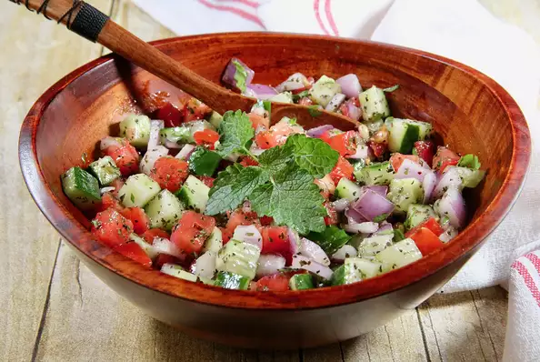
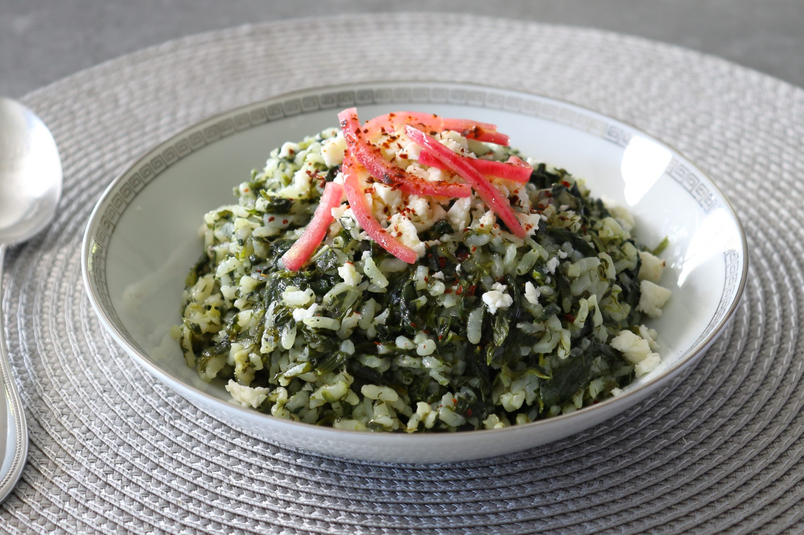
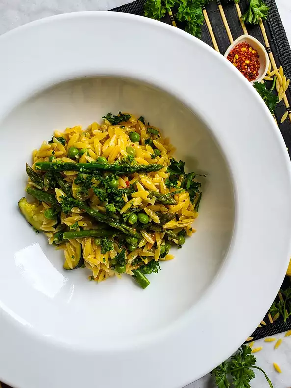

A tasty Persian salad which originated in the town of Shiraz in Southern Iran. Almost always served as a side dish, it's crunchy, bright, refreshing with a mild citrus-flavored dressing, and is served year-round.
With tons of fresh herb flavor, this Greek spinach rice is a simple dish with complex flavors. Serve as a side dish with grilled chicken, lamb, or stew, or by itself as a vegetarian main course. The fresh squeeze of lemon juice and feta crumble are critical to the taste — don't leave them out!
I thought I had Arborio rice but I obviously did not. Orzo pasta makes a delightful risotto with help from spring veggies like asparagus and peas. For service, garnish with some freshly grated Grana Padano cheese and chopped parsley.
